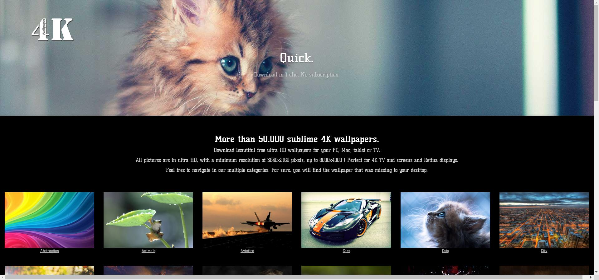
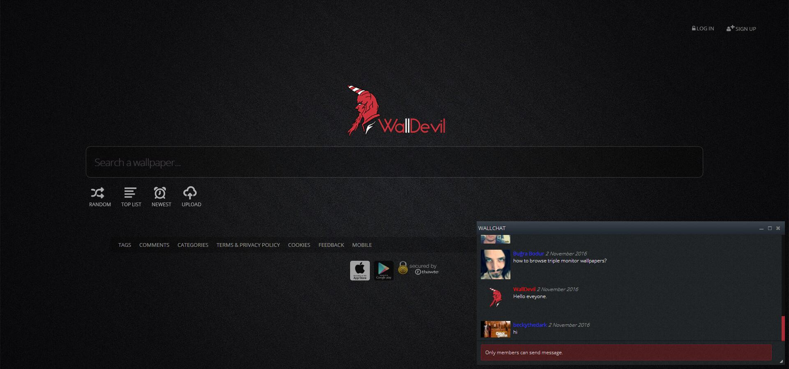

附：点击图片即可进入链接
简单介绍：
p站的用户不少，资源庞杂，需要耐心寻找
如名字一般，所有的壁纸都很简易，却出奇 的美，很受小清新的用户的欢迎。

壁纸的清晰度很高，而且不同的风格都有， 比较大众化 讲道理有用的到4K的地方吗，难道谁家电视 还要壁纸？所以适合强迫症患者
有很多动物和风景的壁纸，不需要有什么日 语功底，而且网页不大，就把它写在这里

这好像是个单人做的壁纸网站，大家也可以 上传图片，里面的类分的比较细也很多